Three pickup candidates, three rival Sootling variants and two gum meter variants, for a pick. All sprites are shown at 3x unless a caption says otherwise. Details, ranking and doubts are in README.md; all numbers are in numbers.txt.
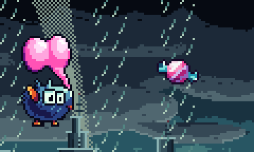
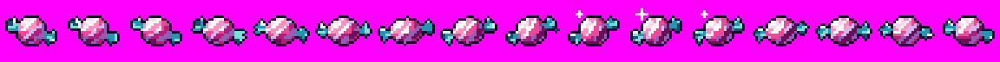
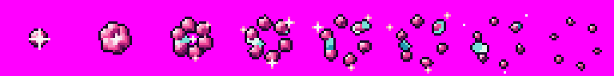
pickup A (Wrapped gum drop): size 24x24; frames 16 idle + 8 collect (collect is 32x32); colours 13 (idle 13); 16 px sprite columns 2 idle, 2 collect; worst sprites per scanline added 4 (two pickups level on screen, one of them popping: 2 + 2); unique 16x16 tiles 64 idle + 32 collect = 96; bob offsets px per frame (applied by position, not drawn in the tile) [-2, -1, 0, 1, 3, 3, 3, 2, 1, 0, -1, -1, -2, -2, -2, -2]
palette A: (16,80,112) (24,8,40) (32,152,176) (104,16,88) (120,224,216) (144,96,184) (176,32,120) (208,184,232) (224,248,240) (240,72,152) (248,144,192) (248,216,232) (248,248,248)
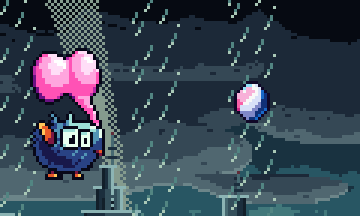
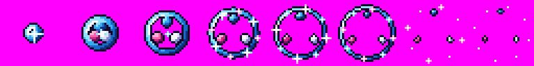
pickup B (Spinning gumball): size 16x16; frames 16 idle + 8 collect (collect is 32x32); colours 12 (idle 12); 16 px sprite columns 1 idle, 2 collect; worst sprites per scanline added 3 (two pickups level on screen, one of them popping: 1 + 2); unique 16x16 tiles 16 idle + 32 collect = 48; bob offsets px per frame (applied by position, not drawn in the tile) [-2, -1, 0, 1, 3, 3, 3, 2, 1, 0, -1, -1, -2, -2, -2, -2]
palette B: (16,8,40) (16,48,120) (24,104,200) (56,168,240) (120,16,96) (128,136,200) (144,224,248) (208,40,136) (216,224,248) (248,96,168) (248,176,216) (248,248,248)
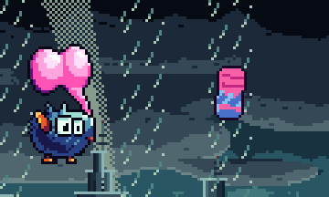
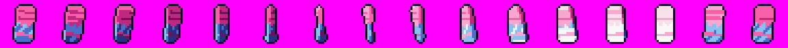
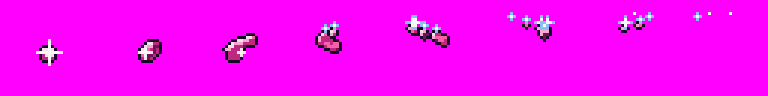
pickup C (Twirling gum stick): size 24x24; frames 16 idle + 8 collect (collect is 32x32); colours 11 (idle 11); 16 px sprite columns 2 idle, 2 collect; worst sprites per scanline added 4 (two pickups level on screen, one of them popping: 2 + 2); unique 16x16 tiles 63 idle + 24 collect = 87; bob offsets px per frame (applied by position, not drawn in the tile) [-2, -1, 0, 1, 3, 3, 3, 2, 1, 0, -1, -1, -2, -2, -2, -2]
palette C: (24,8,40) (40,48,128) (72,112,200) (112,16,88) (136,192,240) (192,40,128) (224,248,248) (248,96,168) (248,168,208) (248,224,232) (248,248,248)
Left to right in every still: player 1, the rival, player 2 (the computer palette of the arena).
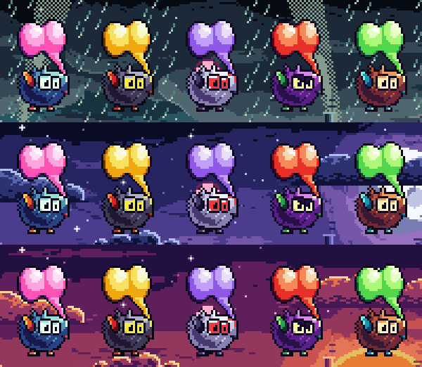
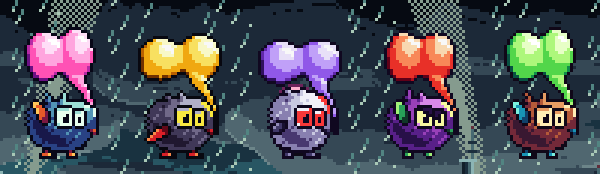
Palette swap only: charcoal fur, yellow eyes and rim, red beak, amber gum
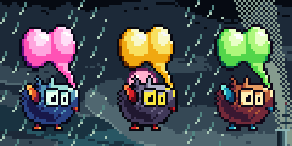
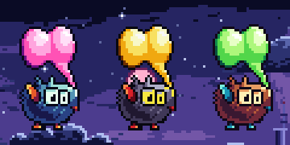
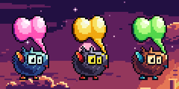
rival A (Hornet): palette swap only: charcoal fur, yellow eyes and rim, red beak, amber gum; frames 63 (shared with the players); colours 15; 16 px sprite columns 2; worst sprites per scanline added 4 (two rivals level, same as two computer fliers in the arena); 0 frames changed, 0 new tiles
palette A index 1..15: (8,8,16) (32,24,48) (64,56,88) (112,104,136) (176,176,200) (248,232,64) (96,8,24) (216,32,40) (248,136,72) (112,48,0) (184,96,0) (240,168,16) (248,224,96) (248,248,200) (248,248,248)
Palette swap only: pale bone fur, red eyes and rim, dark beak, violet gum
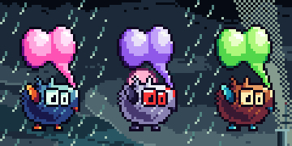
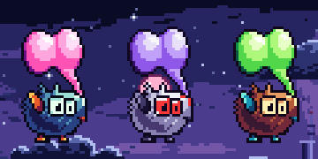
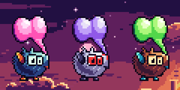
rival B (Bone): palette swap only: pale bone fur, red eyes and rim, dark beak, violet gum; frames 63 (shared with the players); colours 15; 16 px sprite columns 2; worst sprites per scanline added 4 (two rivals level, same as two computer fliers in the arena); 0 frames changed, 0 new tiles
palette B index 1..15: (16,8,32) (72,56,112) (136,128,176) (200,200,224) (240,240,248) (248,56,56) (24,16,48) (64,56,104) (144,136,184) (48,16,96) (96,40,168) (144,88,232) (192,160,248) (232,224,248) (248,248,248)
Palette swap plus angry brows (tile change): purple fur, pale yellow eyes, scarlet gum
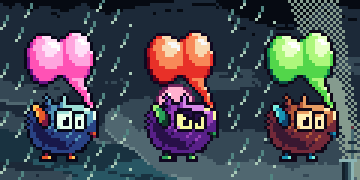
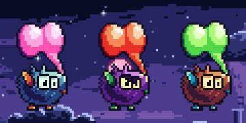
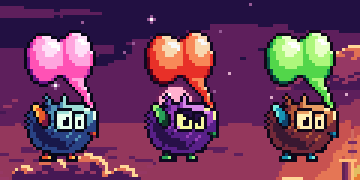
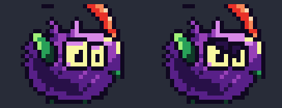
rival C (Bruiser): palette swap plus angry brows (tile change): purple fur, pale yellow eyes, scarlet gum; frames 63 (shared with the players); colours 15; 16 px sprite columns 2; worst sprites per scanline added 4 (two rivals level, same as two computer fliers in the arena); tile change: 41 of 63 frames differ, 123 tile references differ, 111 new unique 16x16 tiles
palette C index 1..15: (16,8,32) (40,16,72) (88,32,136) (152,64,184) (216,136,232) (248,248,160) (16,56,40) (40,160,88) (160,240,120) (96,0,24) (168,16,32) (232,48,40) (248,136,88) (248,216,176) (248,248,248)
for reference, player 1 palette snapped to multiples of 8: (8,8,24) (24,24,72) (40,64,128) (80,144,176) (152,216,208) (224,248,232) (120,24,64) (224,88,40) (248,192,88) (104,16,128) (176,40,160) (248,80,176) (248,160,216) (248,216,240) (248,248,248)
for reference, player 2 / computer palette snapped: (16,8,24) (56,24,48) (112,40,56) (176,88,56) (224,152,96) (248,232,176) (16,64,104) (24,144,176) (120,232,216) (8,80,64) (16,136,72) (80,208,72) (168,240,120) (224,248,192) (248,248,248)
Shown in the player 1 corner tag on the storm sky, in place of the three life dots: full (8) at the top down to empty at the bottom. At 2 steps or fewer the meter switches to a second, orange palette on the same tiles.
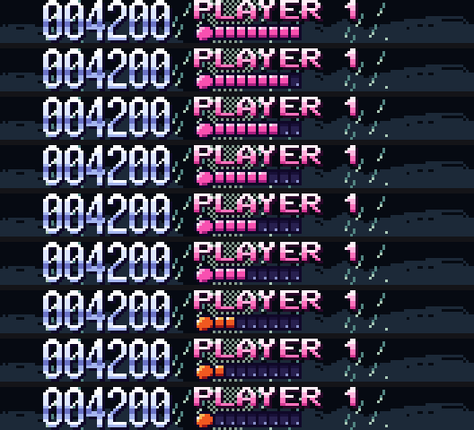
meter tube: fix layer cells 5 (8x8); unique tiles 4; colours 8 per palette (second palette for the low warning at 2 steps or fewer: orange, same tiles; 11 colours over both); 9 states shown (8 fill steps and empty); sprites 0
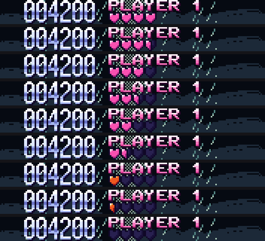
meter lobes: fix layer cells 4 (8x8); unique tiles 3; colours 7 per palette (second palette for the low warning at 2 steps or fewer: orange, same tiles; 10 colours over both); 9 states shown (8 fill steps and empty); sprites 0